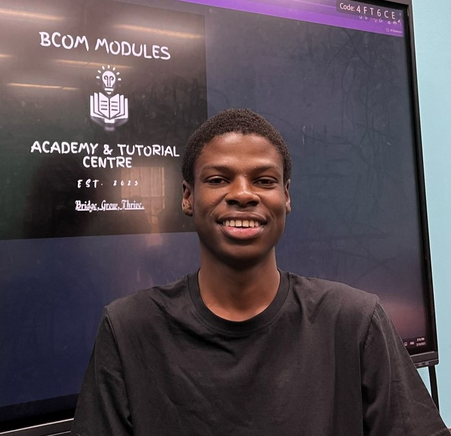

MEET THE TUTORS

Donald S. Kgomokaboya

Isaac L. Kgobe is a Bachelor of Accounting student at the University of Johannesburg. Being a Ujenius Member, he has excelled in his studies, making him eligible to purport his knowledge to students. Isaac is an aspiring CA(SA), Co-Founder of BCAT Tuts, and currently serves as a tutor.
Donald & Isaac have brilliantly served as tutors of the module since February 2025, providing a track record of top students in the Ujenius Club at UJ.